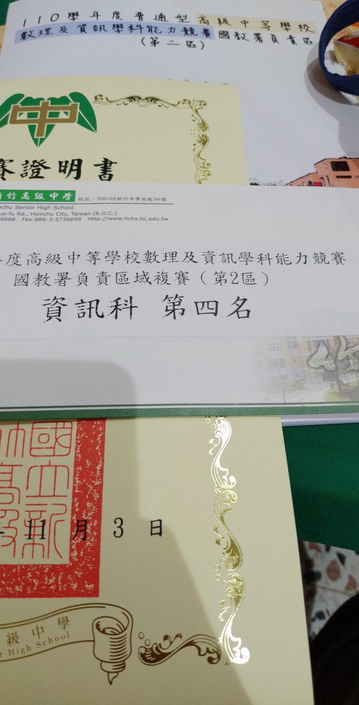

110學年度北二區資訊學科能力競賽
高中最後一次的區賽。
一直以為都第三年參加了應該可以穩定平常心，結果卻莫名緊張，甚至差點把我送下去@@
比賽過程
分上下午場。
依照總分排名，同分按最後得分時間比序。
上午場
上午場是五題，三小時。
開始前在電腦前面甚至在發抖，完全不知道在幹麻。
開場一樣先把 defualt code 打好，然後就開始看題目，發現題目居然有子題了，還真棒。
其實我是先看完全部題目再開始寫的，不過寫的順序也是 ABCDE，所以就直接一題一題打出來吧。
pA
給兩個平行座標軸的矩形和一個點，問該點在多少矩形以內。
語法題@@
把判斷 function 寫好後測一測範測是好的就丟了上去。
0/100 WA
？？ 難道測資又爛了嗎
雖然想要直接跳題但是我決定給自己十分鐘檢查看看，檢查不出來就先當測資爛掉了。
檢查大概八分鐘終於發現題目給的對角座標可能是左下-右上的，改一下判斷式就拿滿了。
100/100
後來去看 pB。
pB
給一堆值域 int 範圍內的分數，模擬從左邊往右逐漸加起來的過程。
原題目還有保證加起來後約分還會是 int 範圍內，只是我沒看到。
因為沒看到這條件，所以我以為這題滿分可能需要大數運算。
所以我直接先把前兩題子題（只有兩個分數相加）撈完，不過想說唬爛看看所以我刻意把 code 寫成應付滿分解的樣子，只是直接拿 long long 硬算。
53/100 RE
我看到是 RE 後就直接以為是 overflow，然後就跳題了。
pC
給 8MB 的記憶體和 $5\times 10^6$ 個整數，每個數字範圍在 $[1, 500]$，輸出這些整數的中位數。
看到這題我第一個想法是二分搜中位數，想了一想發現：「不對啊，我二分搜也需要把所有整數存起來，怎麼夠用」，再看一次題目發現值域超小，垃圾題目= =;
100/100
pD
給一張帶權無向圖和起點終點，每條邊可能是兩種種類其中一種，問從起點到終點在最多只改變一次走的邊的種類的情況下的最短路徑
一臉 dijkstra，只是我好久沒寫了，最近都只遇到 BFS 的題目。
幸好 dijkstra 幾乎就只是 BFS 的 queue 改成 priority_queue，寫一寫看一看就 AC 了。
100/100
pE
給數列 $h$ 跟和數列 $d$ 和 $c$，可以選任意的 $(i, j)$ 滿足 $h_k\lt min(h_i, h_j)\forall i\lt k\lt j$，定義 $(i, j)$ 的價值為 $min(h_i, h_j)\times \sum_{n=i}^{j-1} d_n$，問所有價值不低於 $c$ 的選法中最小價值是多少。
既然兩點中間都要小於兩點，那看起來就很單調 stack。
剛好在 $j$ 不變的情況下 $(i, j)$ 的價值會隨著 $i$ 有單調性，所以就寫個二分搜配上前綴和。
0/100測資又爛ㄉ一ㄠ…，沒，先丟個爆搜確認看看解是不是都會在 stack 裡面。
0/100
居然連這樣爆搜都沒過？
想了快五分鐘才想到 stack 中的左界只能取到大於當前 $h_i$ 的第一個，再往前還是不能取。
先二分搜二分搜的左界，然後二分搜，就 AC 了
100/100
到這裡大約比賽過了一小時，而現在才是惡夢的開始。
我看到 pB 的 verdict 好像是 violeting memory limit（其實我不太清楚，連要好好看 verdict 都不懂@@），但我卻沒有去考慮陣列亂戳的情況。
反而是覺得這題需要大數，而我吃了 overflow 才會 RE。
想說反正剩將近兩小時，我就開始寫大數了，但我只寫過大數加法而已。
花了一個半小時把加減乘除和 gcd 都刻出來了，都是邊寫邊測試的所以看起來沒什麼問題，只是乘除是 $O(nm)$，畢竟我不會 FFT。
中途有想過把 long long 改成 __int128，只是還是沒過。
總之大數看起來很不錯，丟上去看看。
53/100 TLE
居然沒寫爛，我還蠻欣慰的，可是 TLE 我真的無解。
然後就只能到處看大數哪裡能優化然後傻傻的以為大家都不會拿到這筆。
中午
一結束後我到處問，發現全世界都有把 pB 拿滿，全世界都有破台。
就算不是誇飾，至少也聽到了 8 個破台，已經到了全國賽的名額。
所以上午場結束，我的名次在全國賽線外，又只是因為我智障到大家都水掉的水題我沒拿到。
導致我中午連吃飯都沒什麼心情，只是戴上耳機想遠離世間一切塵囂。
腦中浮現了各種可怕的想法，比如現在直接蹺掉下午賽程，回班上去上下午的課程之類的。
但幸好看菈米直播看到後來心情有好一點了，把午餐吃完後想辦法穩住自己心態。
雖然心態還是很炸。
下午場
下午題號接著上午是 pFGH，兩個小時。
下午我在電腦前變得更抖，因為我一定要把差距補回來，上午損失太重。
加上心態也不是很穩了。
開場發現電腦沒有還原，上午的 code 還留著。
所以就直接看題目，做題順序一樣是照順序。
pF
給班上每位同學的成績，對於每位同學輸出他在班上的排名
怎麼又是語法題@@ 到底多怕大家零分
因為分數是 0 到 100，所以就開個陣列紀錄每個分數有哪些人。
88/100 WA（只拿到大家分數皆不相同的子題）
小丑竟是我自己，原來我不會語法。
因為 $n$ 很小，所以 $O(n^2)$ 爆搜對於每個人，有多少人分數高於他。
88/100 WA
仔細看了一下我的 code 和重讀好幾次題目，但發現不了問題，所以只好跳題。
同時想著可能是測資爛了，搞不好等等就 rejduge。
pG
有一個 $n\times m$ 的棋盤（其中 $n\times m\le 10^6$），有一些隔子是有障礙物的，問有多少種放法可以把兩個棋子放在沒有障礙物的相異格子上，且兩個棋子必須要在同列或同行或同斜排
就開個陣列算一下每行每列每斜排，只是我偷懶所以直接用 map。
19/100 TLE
哈哈，被制裁了。改成普通陣列。
100/100
到目前開場過了半個小時左右，節奏還可以，雖然 pF 蠻傷腦筋的。
pH
給 $n$ 和 $s$，輸出任意一種把整數 $1,2,\cdots ,n$ 分到 $s$ 個容器內的方法，必須滿足每個容器內的數字總和皆相等。
直覺告訴我這題就是這場的決勝點了。
想了大概十分鐘突然想起 tie breaker 是看時間，所以先把 $s=2$ 的背包拿下。
32/100
這時我面臨了重要抉擇，要回去 debug pF 還是繼續全力想 pH 滿分解。
我決定全力想 pH，原因是 pH 的滿分可以讓我拿 68 分，就算沒拿到 pF 而損失 12 分，加上上午場損失的 47 分也還是不及 68 分這麼多，所以拿到的話就能確保我能贏過沒拿到的人。
相比之下， pF 的 12 分實際效益真的不大，尤其是我覺得他之後會 rejudge = =;
然後又想了二十分鐘左右，只是完全沒有任何觀察/想法。
也有可能是太焦慮的關係，我沒辦法好好思考。
所以我決定開始唬爛。
這是蠻冒險的抉擇，因為通常我開始唬爛後就不會去想滿分解了，應該要在最後沒辦法時才唬爛，而現在才過不到一小時。
可是我很迫切的想要拿到這分數，不然我真的很有機會進不了全國。
因為整數是連續的從 $1$ 到 $n$，所以看起來就會有很多解是符合的，也看起來亂構蠻容易構出解的，所以我就先維護還沒用過的數字有哪些，每次把那些數字從大到小拿去做背包，把背包構出來的解給加進答案，然後再繼續構新的背包。
從大到小是因為從小到大的話背包會包含太多小數字，這樣到後面大數字感覺就比較容易燒雞。（事實上我後面有傳傳看小到大的解，確實沒有分數）
傳上去之後等待 judge 的期間就繼續想更多唬爛解，想辦法砸越多越好。
結果他就 AC 了。
100/100
我在電腦前面傻掉，這好像是我第一次正式比賽嘗試唬爛然後成功的，以往都是我自己以為是正解到後來才發現是假解。
後來我就一直等著 pF 什麼時候會 rejudge，結果在 rejudge 公告前先來的是改題目的公告。
他們官解明明寫錯，結果他們不是修正官解，而是把題目改成官解的寫法。
我看到當下快中風，因為感覺這場就會用到 tie breaker，這樣亂改題目變成比誰先看到公告然後誰先把新的解打出來。
尤其我實在太氣所以不小心傳了兩筆 WA。
0/100 WA
0/100 WA
100/100
把 pF 給拿滿之後我就開始祈禱下午場不要那麼多人破台
同時祈禱 pF 的 tie breaker 不要讓我出事，同時一直罵師大。
賽後
最後還真的不少上午破台的人下午沒拿滿 pH，所以我從全國賽線外飛到第四名 XD。
算是運氣好吧，要是我 pH 沒有唬爛成功真的就超危險，嘗試唬爛 pH 真的是今天唯一做對的決策。
上午場的敗筆真的就是 pB 沒看清楚題目/沒看 verdict/沒去想自己寫爛，整個把最壞決策都示範了一遍。
總之拿到比去年好一名的成績也讓我滿足了><
